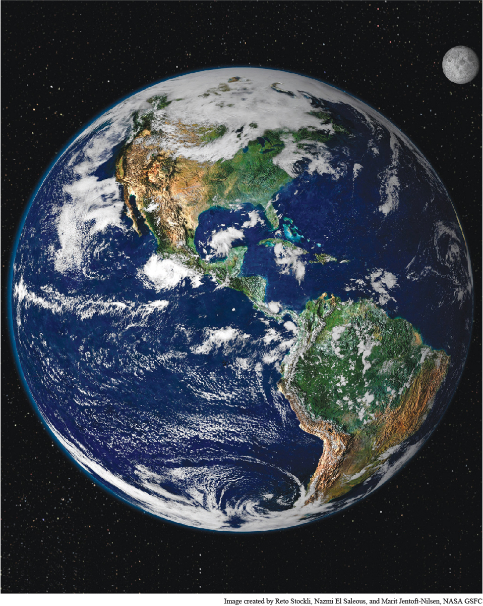

Image created by Reto Stockli, Nazmi El Saleous, and Marit Jentoft-Nilsen, NASA GSFCOne World This NASA photograph, showing both the earth and the moon, reveals none of the national, ethnic, religious, or linguistic boundaries that have long divided humankind. Such pictures have both reflected and helped create a new planetary consciousness among growing numbers of people.